ラージリバースヘッドのストラトキャスターをこよなく愛する管理人が、その思いを勝手に語るだけのページ。
はじめに : ラージリバースヘッドのストラトキャスターとは
このページでは、ラージリバースヘッドのストラトの格好良さをひたすら伝えていく。といってもギターのことを知らない人もいるだろうから、まずは「ラージリバースヘッドのストラトとは何ぞや」というところから説明する。
まず、ストラトとは、フェンダー社が1954年に発表したエレキギターのこと。ギブソン社のレスポールというギターと並んで代表的なエレキギターの一つで、写真を見れば楽器に詳しくない人でも「このギターのことか」と分かるかと。
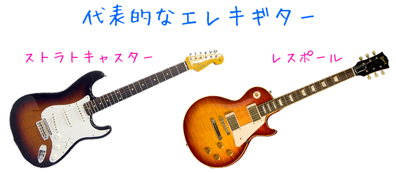
それではラージリバースヘッドとは何か。ストラトのヘッドは元々スモールヘッドと呼ばれる小さなヘッドだった。しかし1965年、フェンダー社が CBS 社に買収されたとき、ヘッドを大きくし、Fender というブランド名のデカールが目立つようにした。その大きくなったヘッドがラージヘッドと呼ばれている。そしてこのラージヘッドの中でも、ヘッドの向きが通常と逆になっているものをラージリバースヘッドと呼んでいる。
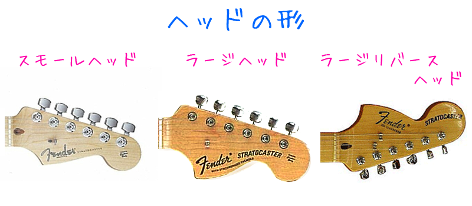
ストラトを使っていた有名なギタリスト、ジミ・ヘンドリックスはギターに関しては左利きだった。しかし当時は左利き用のギターはそれほど製造されておらず、ジミヘンは右用のストラトを左に持ち替えて使用していた。すると見た目上ヘッドの向きが逆になり、独特のカッコよさが現れる。
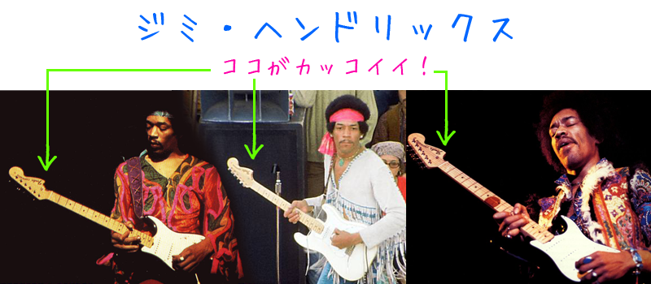
理解できない人には全く意味が分からない格好良さ、ある種のフェチシズムみたいなものだとは思うが、僕はジミヘンの恰好を真似したいという理由からラージリバースヘッドのストラトを好むようになった。このページでは以降このような個人的なフェチシズムを語っていく。
2種類のラージリバース : ジミヘンスタイルとリバースヘッドスタイル
ラージリバースヘッドのストラトには、大きく分けて2種類ある。ここではそれをジミヘンスタイルとリバースヘッドスタイルという2つの名前で呼び分けようと思う。
ジミヘンスタイル
ジミヘンスタイルは、ジミヘンがしていたように利き手と逆のギターを持ち替えて、ナットを交換して使用することでリバースヘッドになるスタイルと定義する。
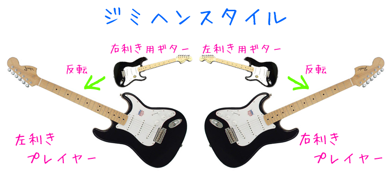
左利きの人の場合、左利き用ギターがない、もしくは右利き用のギターと比べると値段が高いという理由から、右利き用のギターを左に構えて使用することはジミヘンに限らず昔からよくある (ビートルズのポール・マッカートニーが使用していたテレキャスター、エスクワイアなど)。
右利きの人の場合は左利きの人とは逆に、わざわざ値段が張る左利き用のギターを購入しなくてはならない。ジミヘンが好きな右利きのギタリストはよくそうしてモノマネをしている。
このスタイルの特徴は、
- ピックアップと弦の関係が逆になる
- リアピックアップのスラントが逆になる
というところにある。
ストラトのピックアップはスタガードポールピースという方式により、各弦にあったバランスでポールピースの高さが設定されている。しかし、ギターを逆さにして使用するこのスタイルでは弦を逆に張ることになるため、元々1弦用に合わせたポールピースで6弦の音を拾うことになり、意図された音のバランスを崩すことになる。これが通常と違う独特なサウンド、ひいてはジミヘンサウンドを生み出す秘密になっていると云われている。
また、リアピックアップにはスラントといって傾きがついており、通常は高音弦側がブリッジに近付くように傾いている。ピックアップはブリッジに近付くほど高音域が目立ち、ブリッジから離れるほど低音域が目立つようになる。しかしギターを逆さに構えて弦を張り替えた場合、ピックアップの傾きは逆になる。つまり、低音弦側がブリッジに近付くため、本来より低音弦の高音特性がよく表れ、同時に高音弦側がブリッジから離れるためその高音特性が薄れ、全体として中音域が目立つサウンドになる。よく逆スラントと呼ばれるのだが、これもジミヘンのサウンドに近付く肝であるといえる。
以上の話は分かりやすい図とともに解説が載っているので、「六弦先生のエレキギター道場」のジミヘンギターを作れ！Part 1 をぜひご覧になっていただきたい。
一方デメリットとなるのが、
- カッタウェイの関係上ハイポジションがほとんど弾けなくなる
- ボリューム・トーンノブやシールドジャックが上部に来るため演奏の邪魔だったり、手がぶつかってツマミが動いてしまったりする
- トレモロアームが上部に来るため、慣れないと弾きづらい
- コンター加工がないため座って弾くときに若干角が痛い
など。元々右利きの人のために作られたギターを引っくり返して無理矢理使っているため、弾き易さに欠けるという点が目立つ。また、テクニカルなプレイをしたい場合にハイポジションがほとんど弾けないのは致命的。
ジミヘンもよくツマミに手が当たって慌てて直したり、15フレットあたりでのチョーキングのためにネックの上から手を回してチョーキングしているシーンがある (1970年7月4日 Atlanta Pop Festival での Purple Haze の演奏の後半などで見られる)。
左利き用のギターを持ち替えて使用している (逆ジミヘンスタイル) 右利きのギタリストとしては、エアロスミスのリードギター、ジョー・ペリーなどが有名。イングヴェイ・マルムスティーンも時々使っている様子が見られる。
リバースヘッドスタイル
リバースヘッドスタイルは、通常のギターと同じボディに、通常とは逆のネックが取り付けられたような見た目になるスタイルと定義する。
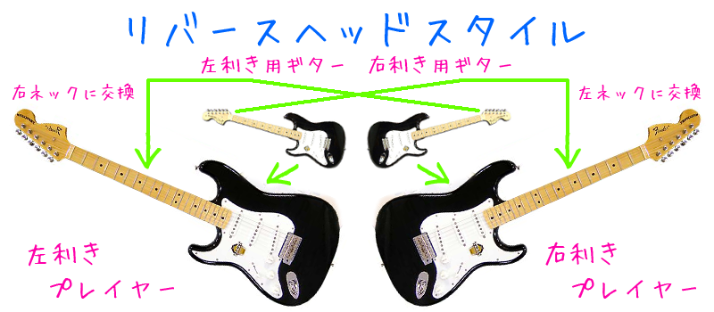
ストラトの開発者レオ・フェンダーは「楽器など所詮は消耗品」と考え、ボディとネックをボルトで締めて繋げて製造することで、後でネックを交換したりできるようにした。レオ・フェンダー自身があまりギターに詳しくなかったが故に実現できた画期的なシステムといえる。
そうしたストラトの構造により、右利きの人は右利き用のボディに左利き用のネックを取り付け、ナットを交換すればリバースヘッドになる。左利きの人も同じように、左利き用のボディに右利き用のネックを取り付けることでリバースヘッドにできる (実際は細かなボルト穴の調整が必要な場合もある)。
このリバースヘッドスタイルの特徴は、ボディ形状が自分の利き手にあったものなので、当然ハイポジションが弾き易く、コントロール部分に手が当たったりアームが邪魔だったりといったジミヘンスタイルのデメリットはなくなる。
しかしボディ形状が通常どおりとなると、ピックアップの向きとリアピックアップのスラントは通常どおりとなる。つまり、ジミヘンスタイルで実現できた独特なサウンドは得られないことになる。
ボディはそのままにジミヘンスタイルのピックアップ特性を得るためには、右利き用のギターであれば左利き用のピックアップを移植することで対処する。また、リアピックアップのスラントに関してはボディのザグリ処理をして、逆スラントになるピックアップカバーを購入または自作して取り付ける必要がある。
1997～2000年頃まで、Voodoo Stratocaster (後に '60s Reverse Headstock という名称に変更) というモデルが販売されていた。こちらは上述のピックアップに関する問題を解決するためリアピックアップが逆スラントになっている。
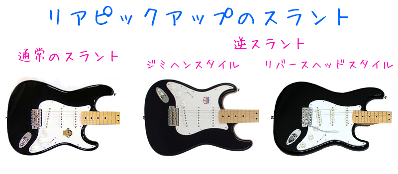
いずれにしてもジミヘンスタイルで真似できたサウンド面の特徴は一筋縄では得られないだろう。少なからず妥協することが必要になる。
リバースヘッドスタイルのギタリストといえば、Tube でギターを担当し、日本人で初めて Fender USA との専属契約を結んだ春畑道哉が有名だろう。彼のシグネチャーモデルはロック式ナットでフロイドローズ付きの22フレットという珍しい仕様になっている。
両方に共通の特徴
ジミヘンスタイル、リバースヘッドスタイル、どちらにも共通の特徴がある。それはまさに「リバースヘッドであること」。
通常のストラトの場合、低音弦ほどナットからペグまでの距離が近く、高音弦ほどその距離は長くなる。しかしリバースヘッドの場合、逆に低音弦の方が距離が長くなり、高音弦ほど距離が短くなる。
これによって弦のテンションが通常と異なり、サウンドにも影響する。それまで長くストラトを使っていた人がリバースヘッドにすると、そのテンションの違いから弾きにくいと感じることもあるが、これこそがリバースヘッドであることの証だといえる。
ヘッドのロゴ・デカール
ヘッドに貼られる Fender ロゴのシール、デカールというが、リバースヘッドの場合、デカールのデザインはどうなるのか。画像は参考ページより転載している。
- 右利き用 1
-
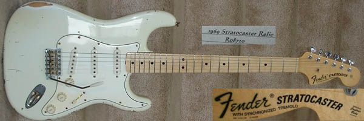
1968・1969年頃の通常の右利き用。Fender Japan ST68TX はこのタイプ。ジミヘンはこれを逆さにして持っていた。
- 左利き用 1
-
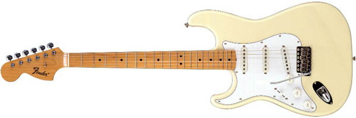
左利き用のギターに貼られているモノ。Fender の文字のみで Stratocaster というモデル名は省略されている。Fender Japan ST68JH と ST68LH はこのタイプ。
- 左利き用 2
-
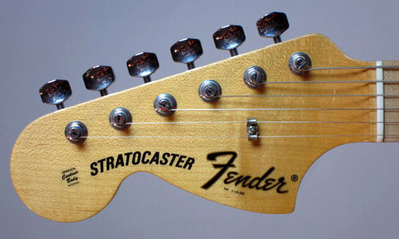
Stratocaster Fender と書かれる。カスタムショップのレフトハンドモデルは主にこのタイプ。
- 右利きリバースヘッド 1
-
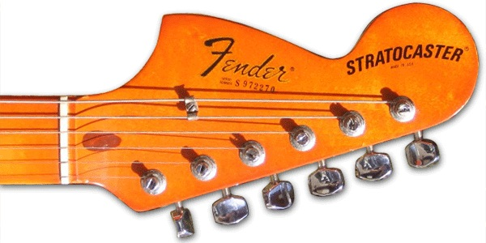

リバースヘッド仕様の右利きギターでのデザイン。Fender Japan ST68RH はこれに近い。写真2枚目は管理人所有の Fender Japan ST68RH - Black。
- 右利きリバースヘッド 2
-
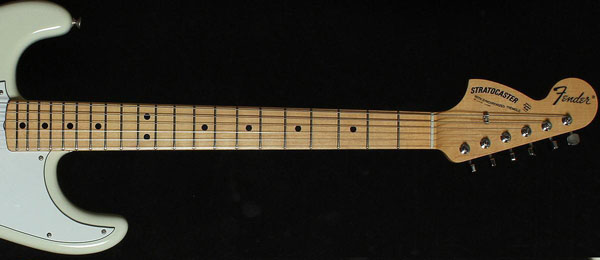
珍しい。上の「右利きリバースヘッド 1」と比べると文字の位置が逆で、Stratocaster Fender となる。
- 右利きリバースヘッド 3
-
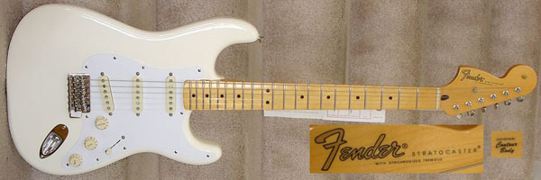
金色のトランジションロゴ。Voodoo ストラトはこのタイプ。
- 右利きリバースヘッド 4
-
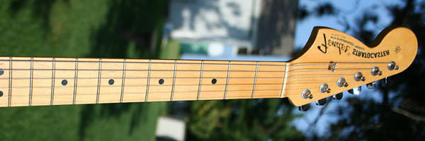
ミラーロゴ。Hendrix Tribute はこのタイプ。1969年当時のレフトハンドモデルにも一部使われていたらしい。
- 右利きリバースヘッド 5
-
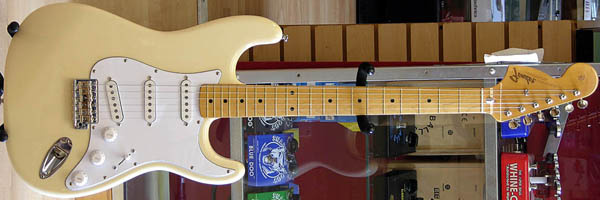
ミラー仕様のトランジションロゴ。大変珍しい。
他にも、再現する年代によって「With Synchronized Tremolo」の文字があったりなかったり、ロゴの位置が微妙に違ったりする。
個人的なこだわりポイント
ラージリバースヘッドの種類について話してきたが、ここではそれ以外の部分についての個人的なこだわりを紹介する。
僕の場合はジミヘンに影響を受けてラージリバースヘッドが好きになったため、ジミヘンが使用していた1969年製ストラトキャスターの特徴である「貼りメイプル指板」は必須条件。個人的によく22フレットを使うので、22フレットある貼りメイプルのネックがあると最高なのだが…。w
単にラージヘッドであれば70年代のストラトもラージヘッドではあるが、70年代に入るとバレット・トラスロッドといって、ヘッド部分にトラスロッドがはみ出るようになる。個人的にはこれは見栄えが好きはない。
僕は普段右利きだが、右利きの人が左利き用のギターを逆さに構える姿 (逆ジミヘン) は無理にジミヘンを真似しているようであまり好きではないため、ジミヘンスタイルよりはリバースヘッドスタイルを好む。
また、僕は時たま遊びでレフティでギターを弾くことがあるので、その際はモロにジミヘンの真似をしたいと思い、順ジミヘンスタイルでギターを弾いている。
そんな僕が所有しているのは Fender Japan ST68RH Black というモデル。ある日ふとジミヘンの曲を聴きたくなりしばらく聴いていたところ、その日がジミヘンの命日だと気付いた (2010年9月18日)。ジミヘンが亡くなって40年も経つのかーと思っていたら、イケベ楽器に新しいページが追加されていた。それがこの ST68RH だった。
このモデルは2006年頃に一度販売されており、数量限定ですぐに売り切れてしまった。それがこの日、再発売されることになったようだ。その日はまだ入荷前だったのだが、ジミヘンの命日に、ジミヘンの影響で好きになったラージリバースのストラトを見付けた、という偶然に運命的なものを勝手に感じ、勢いで注文してしまった。
この ST68RH、ピックアップは右利き用そのまま。個人的にピックアップを逆にすることにはさほどこだわってはいない。リアピックアップを逆スラントにできるピックアップカバーを持っているが、テキサススペシャルの音はとても気に入ったので、とりあえずこのままで良いかなと思っている。できれば22フレットを増設したいと思っている。
ラージリバースを買う
ラージリバースヘッドのストラトを購入したい人のために、現在販売されているモデルを紹介する。
- 安ギターで揃える
-
フェンダーブランドに拘らないのであれば、Playtech や PhotoGenic などといった安いブランドのストラトを購入する方法がある。また Fender の廉価ブランド Squier にもラージヘッド仕様のストラトがある。
利き手と逆のストラトを買い、ナットとオクターブ調整だけすれば簡単にジミヘンスタイルになる。また右利き用のストラトと左利き用のストラトを2本購入し、ネックを交換してリバースヘッドスタイルにする場合でも、安いギターなら2本買っても2万円以内で収まったりするので現実的。安ギターの場合ラージヘッドは少ないが、探せば見つかる。
- Juno JST-1MH
- Squier By Fender Affinity Strat
- Fender Japan ST68
-
フェンダーブランドの中で最も手頃な価格で入手出来るのは、Fender Japan の ST68 シリーズ。
- 右利き用の ST68TX
- 左利き用の ST68LH
- 右利きの人がジミヘンスタイルでプレイ出来る ST68JH (神田商会オリジナルモデル)
- 右利きの人がリバースヘッドスタイルでプレイ出来る ST68RH (イケベ楽器オリジナルモデル)
などがある。右利きの人は ST68JH と ST68RH があるので、ジミヘンスタイルもリバースヘッドスタイルも簡単に実現できる。
左利きの人は ST68TX のナットを左利き用に交換することでジミヘンスタイルになる。リバースヘッドスタイルにする場合は ST68TX と ST68LH の2本を購入してネックを交換することで実現可能。
余談だが、以前 ST68JH と同じジミヘンスタイルになる ST68R というモデルがあった。こちらはヘッドのロゴが逆にならないように貼られていた (ST68RH に近いヘッドロゴ)。
- Fender Japan ST72・Fender Mexico Classic '70s Stratocaster
-
ST68 以外のレギュラーラインナップでラージヘッドのものというと、Fender Japan ST72 や Fender Mexico Classic '70s Stratocaster がある。これらは70年代のモデルのため、バレット・トラスロッドでボディが3点止めである。70年代モデルでも問題がなければ、相場は ST68 よりは安いので良いだろう。
- 楽器店オリジナルモデル
-
ST68JH (神田商会オリジナル) や ST68RH (イケベ楽器オリジナル) のように、ときどき楽器屋がオーダーメイドでリバースヘッドの商品を作ることがある。スモールヘッドではあるが、Fender Japan ST62-US/RH というストラトはリバースヘッドになっていた (現在はなくなった模様)。
カスタムショップではタイムマシンシリーズや、アーティストのシグネチャーモデルとしてラージヘッドやリバースヘッドのものが作られている。最近であれば以下のようなものがある。
- Fender Custom Shop 1969 Stratocaster : NOS・Closet Classic
-
タイムマシンシリーズのストラト。NOS とは New Old Stock の略で、当時製造された新品をタイムマシンで現代に持ってきたかのような作りを再現しているもの。Closet Classic は昔作られたギターを今日まで綺麗に保存していた時のような状態の再現で、弾き込まれたヴィンテージを再現した Relic もある。
単なる1969年製ストラトのリイシューのためリバースヘッドではないが、レフティモデルもあるのでジミヘンスタイルは比較的容易。また、Closet Classic にはわずかに Reverse Head も存在している。実際の1969年製のストラトは大変珍しく市場でも200万円以上するのがザラなので、30万円前後で手に入るこのカスタムショップモデルはかなり良い選択肢だと思われる。
- Fender Custom Shop Michiya Haruhata Stratocaster
-
Tube のギター春畑道哉のシグネチャーモデル。これまで3・4種類ほど発表されている。
- Fender Custom Shop Dick Dale Signature Stratocaster
-
映画パルプ・フィクションや Taxi のテーマ曲「ミザルー」で知られるギタリスト、ディック・デイルのシグネチャーモデル。彼はオーティス・ラッシュや松崎しげるなどと同じく、右利き用の弦の並びのまま左でギターを弾いている。シグネチャーモデルは右利き用で、スモールヘッドながらリバースヘッドになっている。
この他、フェンダーブランドで購入するとなると、過去に発売されたモデルの中古品を探すことになる。Yahoo! オークションや楽天市場、デジマートなどで検索すると良い。以下によく知られているモデルをまとめてみた。
- Hendrix Tribute Stratocaster (1997-2000)
-
右利きの人がジミヘン気分を味わえるよう、左利き用のストラトで作られたジミヘンスタイルのストラト。鏡に映すと正しい文字になるミラーロゴデカールが貼られており、ネック・ジョイント・プレートにはジミヘンの肖像画が刻印されている。色はオリンピック・ホワイトのみの様子。Fender Japan ST68JH はこれと同じ形。
- Voodoo Stratocaster (1998-1999) → Fender '60s Reverse Headstock Stratocaster
-
右利きの人のためのリバースヘッドスタイルのストラト。右利き用のボディにすることで Hendrix Tribute の「弾きにくさ」を解消しつつ、リアピックアップのスラントを逆にしていることでジミヘンサウンドも追及できる。しかし、取り付けてあるピックアップは右利き用である模様。これもネック・ジョイント・プレートにはジミヘンの肖像画が刻印されている。
その後ジミヘンの名前を使えなくなったのか、2000年からは Fender '60s Reverse Headstock Stratocaster と名称変更する。同じスペックで Fender '68 Reverse Headstock Stratocaster というものもあった (呼び方の違いだけかも)。
その他リバースヘッドやジミヘンスタイルのものを紹介する。
ジミヘンスタイルの場合はさほど問題ないが、リバースヘッドスタイルは基本的にかなり珍しいので、とりあえず通常のストラトを購入し、後でリバースヘッドのネックだけ探して交換するというやり方もある。
参考文献
記事を書くにあたり参考にしたページや、ページ内で使用している画像の出典など。
{kind=link}
{kind=link}
{kind=link}
{kind=link}
{kind=link}
{kind=link}
{kind=link}
{kind=link}
{kind=link}
{kind=link}
{kind=link}
{kind=link}
{kind=link}
{kind=link}
{kind=link}
{kind=link}
{kind=link}
{kind=link}
{kind=link}
{kind=link}
{kind=link}
{kind=link}
{kind=link}
{kind=link}
{kind=link}
{kind=link}
{kind=link}
{kind=link}